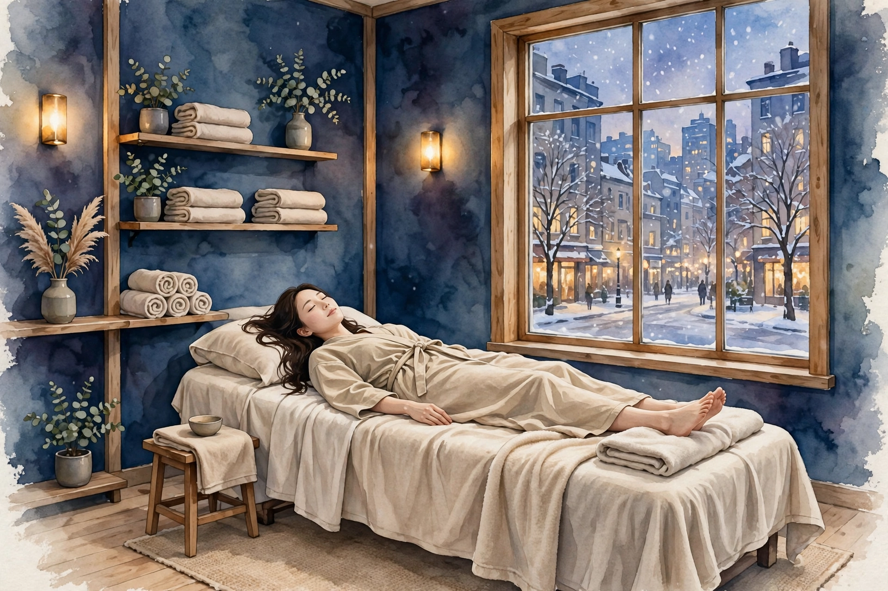
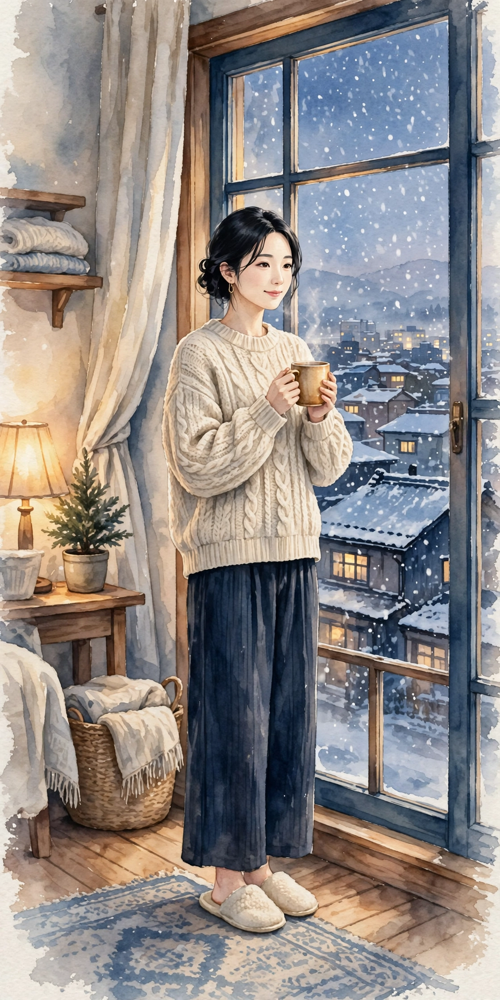
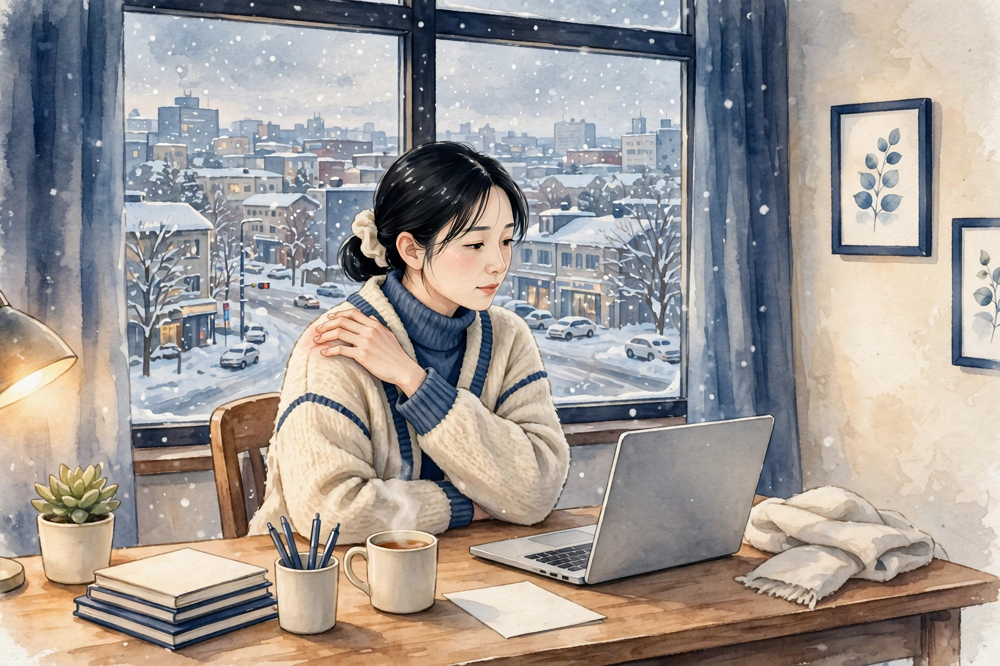
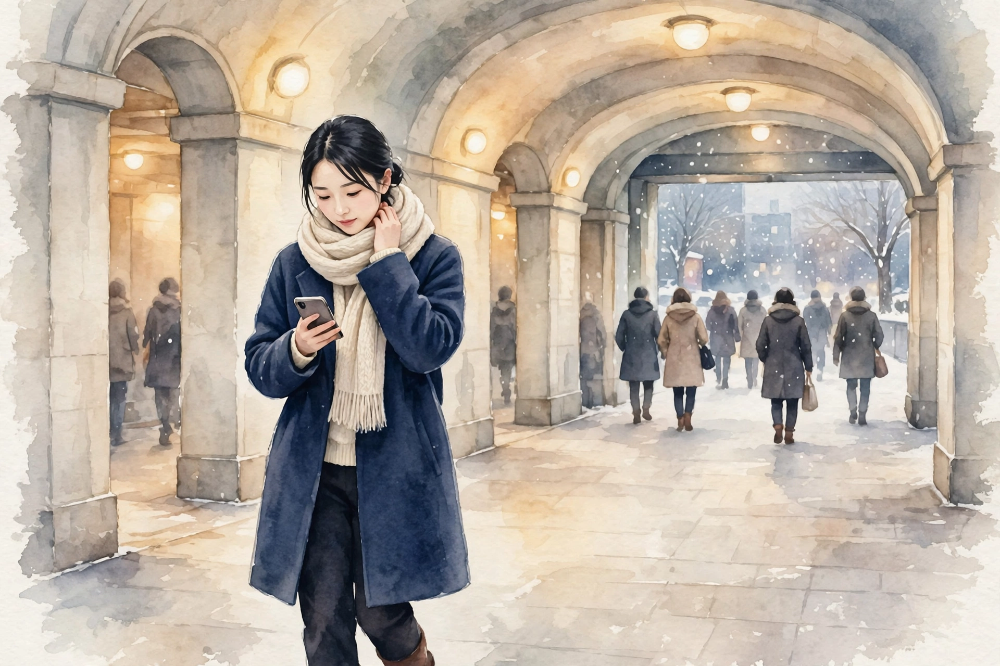
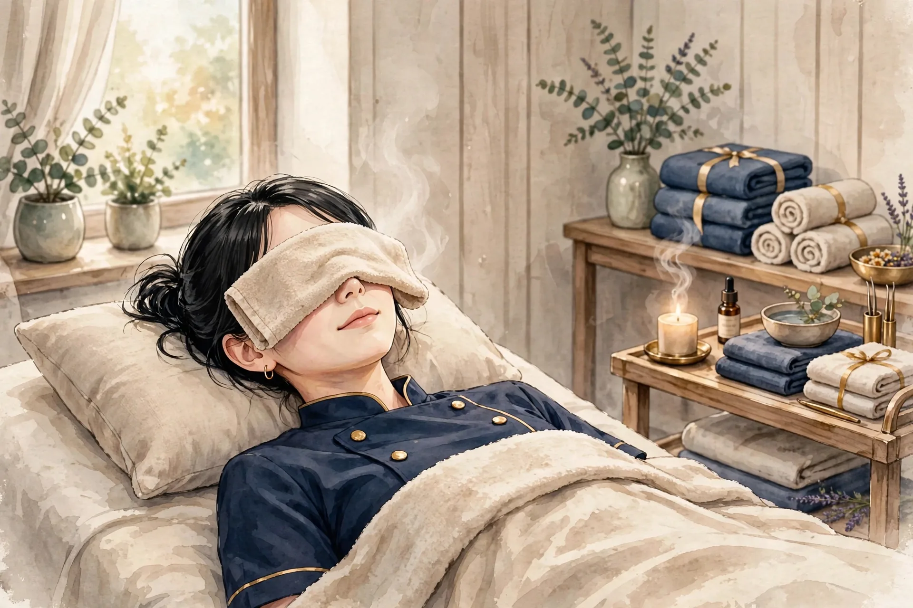

女性専用 ／ オイルマッサージ × 美容整体
一日の終わりに、
肩と心をほどく場所を、
札幌に。
近日開院予定（受付は開始次第、このサイトとLINE公式でお知らせします）
美容整体ステラ・デネブは、札幌・すすきの／大通エリアで開院準備中の女性専用サロンです。仕事帰りの夕方から夜にかけて、オイルマッサージと美容整体で、肩こりや首の重さ、姿勢の崩れといった日々のお悩みに寄り添います。
- 女性専用 女性のお客様のみご利用いただけます
- 90分 10,000円 分かりやすい単一価格です
- 月〜土 17:00〜22:00（予定） お仕事帰りに立ち寄れる時間帯です

こんなお悩みはありませんか
当てはまるものが多いほど、毎日の姿勢や過ごし方に負担が積み重なっているサインかもしれません。まずはチェックしてみてください。
- 夕方になると肩が重く、手で揉みたくなる
- スマートフォンを見る時間が長く、首が前に出ている気がする
- デスクワークで背中が丸まり、姿勢が気になる
- 脚のむくみが気になり、靴がきつく感じる日がある
- 頭が重く感じて、すっきりしない日が続いている
- 冷えが気になり、手足が冷たいことが多い
- 眠りが浅く、朝起きても疲れが残っている感じがする
- 顔のむくみや、フェイスラインのもたつきが気になる
お悩みごとの詳しい解説とセルフケアは、でご紹介しています。
施術の様子
デネブの施術は、オイルマッサージと美容整体を組み合わせた90分です。当日のお体の状態をお聞きしながら、力加減や重点的にほぐす部位を調整します。
01
カウンセリング
その日のお悩みや体調、気になる部位をお聞きします。姿勢の様子も一緒に確認し、施術の進め方をご相談します。
02
オイルマッサージ
オイルを使って背中・肩・脚などを流れるようにほぐします。こわばりやすい肩や首まわりは、様子を見ながら丁寧に圧を調整します。
03
美容整体
骨盤や背骨まわりのバランスに目を向けながら、姿勢が整いやすい状態を目指します。無理に強い力を加える施術は行いません。
※ 当サロンでは鍼灸は行いません。施術は医療行為ではなく、リラクゼーションと美容を目的としたものです。
料金・営業案内
料金はシンプルな単一価格です。コース選びで迷うことなく、当日のお悩みに合わせて内容を組み立てます。
90分 ／ 10,000円（税込）
近日開院予定（受付は開始次第、このサイトとLINE公式でお知らせします）- ・ 料金は90分10,000円の単一価格です
- ・ 担当セラピストは開院時にご案内します
- ・ お問い合わせ用LINE公式アカウントを開設しました
| 店名 | 美容整体ステラ・デネブ |
|---|---|
| 場所 | 札幌・すすきの／大通エリアで開院準備中（施設・住所は決まり次第ご案内します） |
| 対象 | 女性専用 |
| 施術内容 | オイルマッサージ、美容整体（鍼灸は行いません） |
| 料金 | 90分 10,000円（単一価格） |
| 営業時間（予定） | 月〜土 17:00〜22:00 ／ 日曜休み（いずれも予定です） |
| 予約受付 | 近日開院予定のため、現在は受付を行っていません。受付は開始次第、このサイトとLINE公式でお知らせします |
| お問い合わせ | お問い合わせ用LINE公式アカウントを開設しました |
姉妹店のご案内
ステラシリーズは、星の名前を冠した女性専用サロンです。営業中の姉妹店は各店のサイトでご案内しています。
営業中の姉妹店
開院準備中の姉妹店
- 美容整体ステラ・リゲル（東京）開院準備中
- 美容整体ステラ・カペラ（名古屋）開院準備中
- 美容整体ステラ・アンタレス（福岡）開院準備中
- 美容整体ステラ・デネブ（札幌）開院準備中
このサイトです - 美容整体ステラ・プロキオン（横浜）開院準備中
- 美容整体ステラ・アルデバラン（仙台）開院準備中
- 美容整体ステラ・レグルス（広島）開院準備中
- 美容整体ステラ・ベテルギウス（大宮）開院準備中
開院のお知らせについて
美容整体ステラ・デネブは近日開院予定です。開院日と受付の開始は、このサイトとLINE公式でお知らせします。お問い合わせ用LINE公式アカウントを開設しました。開院まで、でセルフケアの読み物をお届けします。
セラピストとして働くことに興味のある方は、をご覧ください。
LINE公式アカウントでお問い合わせ
開院・受付開始のお知らせもLINEでお届けします
お悩み別ページ
気になるお悩みを選ぶと、要因の整理・セルフケア・受診の目安をまとめた解説ページをご覧いただけます。解説は一般的な情報であり、診断や治療を行うものではありません。
肩こり
夕方に重くなる肩、揉んでも戻ってしまう張り。デスクワークや姿勢との関わり、毎日のセルフケアの組み立て方を解説します。
首こり
スマートフォンやパソコンで前に出た頭を支える首の負担。首まわりの仕組みと、無理のないほぐし方・整え方を解説します。
腰の重さ・腰痛
雪かきのあとに重くなる腰、雪道歩行の緊張。雪国ならではの要因を整理し、作業前後の工夫と毎日のセルフケアを解説します。
眼精疲労・目の疲れ
雪道の運転と暖房の乾燥で重くなる目元。集中やまぶしさ、乾燥など要因を整理し、蒸しタオルや加湿など毎日のセルフケアを解説します。
姿勢・猫背が気になる
背中が丸まりやすいのは、胸や肩まわりの使い方と骨盤の傾きが関わります。美容整体では骨盤・背骨まわりのバランスに目を向け、姿勢が整いやすい状態を目指します。詳しい解説ページは準備中です。
脚のむくみ・だるさ
雪道歩行と締め付けで張る冬の脚。歩き方や冷えなど要因を整理し、足湯や室内でできる脚の動かし方など毎日のセルフケアを解説します。
冷えが気になる
氷点下の冬に辛くなる手足の冷たさ、雪道の緊張との関わり。雪国ならではの要因を整理し、足湯や湯船など毎日のセルフケアを解説します。
頭の重さ・すっきり感
首や肩の張りが続くと、頭の重さを感じることがあります。首・肩・頭まわりを丁寧にほぐし、すっきりした感覚を目指します。強い頭痛や繰り返す頭痛がある場合は、まず医療機関への相談をおすすめします。詳しい解説ページは準備中です。
よくある質問
開院前にいただくことの多いご質問をまとめました。受付に関する最新情報は、このサイトでお知らせします。
いつ開院しますか
近日開院予定です。具体的な開院日は決まり次第、このサイトとLINE公式でお知らせします。現在は予約の受付を行っていません。
場所はどこですか
札幌・すすきの／大通エリアで開院準備中です。施設と住所は確定次第ご案内します。それまでの間、所在地に関する個別のお問い合わせにはお答えできない場合があります。
女性専用ですか
はい、女性のお客様専用のサロンです。
料金はいくらですか
オイルマッサージと美容整体を組み合わせた90分コースが10,000円の単一価格です。時間や部位によって料金が変わることはありません。
どんな施術ですか。鍼は使いますか
オイルを使ったマッサージと、姿勢のバランスに目を向ける美容整体を組み合わせた施術です。鍼灸は行いません。また、施術は医療行為ではなく、病気の診断や治療を目的としたものではありません。
営業時間を教えてください
月〜土の17:00〜22:00、日曜休みを予定しています。開院時に改めて確定した時間をご案内します。
担当のセラピストは分かりますか
担当セラピストは開院時にご案内します。当サロンは業務委託スタッフ主体の運営のため、個人プロフィールは掲載していません。
予約や問い合わせはどうすればいいですか
受付は開始次第、このサイトとLINE公式でお知らせします。お問い合わせ用LINE公式アカウントを開設しました。下のボタンから友だち追加してお問い合わせください。
妊娠中でも施術を受けられますか
体調や時期によって対応が異なります。開院後の受付開始時に、あらためてご案内します。ご不安な場合は、かかりつけ医への確認をおすすめします。
痛い施術ですか
力加減はお声を聞きながら調整します。無理に強い力を加える進め方はしませんので、施術中も遠慮なくお伝えください。
経絡・経穴ガイド
東洋医学で体のエネルギーの通り道とされる「経絡」と、その上にある要所「経穴（ツボ）」の基礎知識です。当サロンの施術では鍼は使いませんが、経穴の位置を目安に、手や指でやさしく圧をかけるアプローチを取り入れています。ここでの説明は伝統的な考え方の紹介であり、特定の症状への効果を保証するものではありません。
経絡とは
経絡は、東洋医学の古典に基づく考え方で、全身を巡る流れの道筋を指します。正経と呼ばれる主要な経絡は12本あり、それぞれ内臓の働きと結びつけて考えられてきました。経穴は経絡上に点在する要所で、古典では360以上が知られています。現代では、経穴の位置は骨や筋肉の目印からの距離で表す方法が広く使われています。
施術でよく触れる経穴
| 肩井（けんせい） | 肩の稜線のほぼ中央、首の付け根と肩先の中間あたりにある経穴。肩まわりの施術で目安にする代表的な点です。強く押しすぎず、呼吸に合わせてやさしく圧をかけます。 |
|---|---|
| 天柱（てんちゅう） | 首の後ろ、髪の生え際の高さで、太い筋肉の外側のくぼみにある経穴。首の後ろ側をほぐす際の目安になります。 |
| 風池（ふうち） | 後頭部の下、耳の後ろの骨と首の筋肉の間のくぼみにある経穴。天柱よりやや外側に位置します。頭を支えるように、指の腹で包むように触れます。 |
| 合谷（ごうこく） | 手の甲側、親指と人差し指の骨が合う部分のやや人差し指寄りのくぼみにある経穴。手軽に触れられるため、セルフケアでも使われることが多い点です。 |
| 曲池（きょくち） | 肘を曲げたときにできるしわの、外側の端にある経穴。腕まわりの施術の目安になります。 |
| 足三里（あしさんり） | 膝のお皿の下、外側のくぼみから指幅4本ほど下にある経穴。脚の施術でよく知られる点の一つです。 |
| 三陰交（さんいんこう） | 内くるぶしの頂点から指幅4本ほど上、すねの骨の後ろ際にある経穴。脚の内側のラインをたどる際の目安です。 |
| 湧泉（ゆうせん） | 足の裏、指を曲げたときにくぼむ部分にある経穴。足裏へのアプローチの目安になります。 |
ご自宅で経穴に触れるときの注意
- 押す力は「気持ちよい」と感じる程度までにとどめ、痛みを我慢して強く押さないでください。
- 1か所につき、ゆっくり呼吸しながら5秒ほど圧をかけ、数回繰り返すくらいが目安です。
- 皮膚に傷や炎症がある場所、体調がすぐれないときは避けてください。
- しびれや強い痛みなど気になる症状がある場合は、セルフケアで様子を見続けず、医療機関に相談してください。
※ 経穴の位置は体の目印からの目安です。個人差があるため、位置の感じ方には幅があります。
セラピスト募集
美容整体ステラ・デネブ（札幌・すすきの／大通エリア）では、開院に向けて業務委託のセラピストを募集しています。夕方から夜の時間帯を中心に、あなたのペースで働ける形を一緒に作っていきましょう。
| 雇用形態 | 業務委託 |
|---|---|
| 報酬 | 施術料の60％ |
| 勤務地 | 札幌・すすきの／大通エリア（施設は開院準備中です） |
| 働く時間 | 月〜土 17:00〜22:00（予定）の範囲で、希望に合わせて設定できます |
| 対象 | 女性セラピストを募集しています（女性専用サロンのため） |
未経験者は研修無料
未経験の方も歓迎します。施術の基礎から学べる研修を無料でご用意していますので、安心してスタートできます。
経験者は技術をそのままメニューに
経験者の方は、お持ちの技術をそのままメニュー化できます。これまで磨いてきた手技を、そのままお客様に届けてください。
時間は希望に合わせて
働く時間は希望に合わせて設定できます。週に数日だけ、夜の数時間だけといった働き方もご相談ください。
Stella Deneb — Beauty Seitai Salon for Women
Stella Deneb is a women-only salon preparing to open in the Susukino / Odori area of Sapporo, Japan. We combine oil massage with beauty seitai (a Japanese body-balancing treatment) in a single, simple 90-minute session.
| Salon | Beauty Seitai Stella Deneb — women only |
|---|---|
| Location | Susukino / Odori area, Sapporo (preparing to open; address to be announced) |
| Treatment | Oil massage and beauty seitai. We do not offer acupuncture. Treatments are for relaxation and beauty care, and are not medical treatment. |
| Price | 90 minutes — ¥10,000 (single flat rate, tax included) |
| Hours (planned) | Monday to Saturday, 5:00 p.m. – 10:00 p.m. Closed on Sundays (planned) |
| Therapists | Our therapists will be introduced when the salon opens. |
| Contact | Our official LINE account for inquiries is now open. Please add us as a friend using the button below to contact us. |
About the treatment
Each session begins with a short consultation about how your body feels that day — stiff shoulders, a heavy neck, tired legs, or posture concerns. The oil massage works over the back, shoulders and legs with pressure adjusted to your comfort, and the beauty seitai part focuses on the balance around the pelvis and spine, aiming for a posture that feels naturally upright. Strong, painful techniques are not used.
Sister salons
Stella Deneb is part of the Stella series of women-only salons, each named after a star. Our sister salons in Umeda (Osaka), Sannomiya (Kobe), Namba (Osaka), Ashiya and Kyoto are already open, and further salons — including Deneb here in Sapporo — are in preparation in Tokyo, Nagoya, Fukuoka, Yokohama, Sendai, Hiroshima and Omiya.
ブログ・コラム
お悩み別の解説ページと、季節に合わせたセルフケアのコラムをお届けします。開院に向けて、少しずつ記事を増やしていきます。
-

コラム ／ 季節のセルフケア初雪の便りが届く頃は、肩まわりの張りや手足の冷たさを感じやすい時期です。温める工夫と、雪の季節を健やかに過ごすセルフケアをご紹介します。
-

お悩み別 ／ 肩こりデスクワークや姿勢と関わる肩の張りを、要因ごとに整理しました。毎日のセルフケアと、受診を考える目安もまとめています。
-

お悩み別 ／ 首こり前に出た頭を支える首の負担を、姿勢の観点から整理しました。画面との付き合い方や、首まわりのセルフケアをご紹介します。
-
 お悩み別 ／ 冷え
お悩み別 ／ 冷え厳しい冬のある札幌で冷えを感じやすくなる要因を整理しました。毎日のセルフケアと受診の目安もまとめています。
-
 お悩み別 ／ 腰の重さ・腰痛
お悩み別 ／ 腰の重さ・腰痛雪かきと雪道のある札幌で重くなりやすい腰の要因を整理しました。作業の工夫と毎日のセルフケア、受診の目安もまとめています。
-

お悩み別 ／ 眼精疲労・目の疲れ冬の暮らしが長い札幌で目の疲れを感じやすくなる要因を整理しました。自宅でできるセルフケアと受診の目安もまとめています。
-
 お悩み別 ／ 脚のむくみ
お悩み別 ／ 脚のむくみ冬の長い札幌で脚のむくみを感じやすくなる要因を整理しました。毎日のセルフケアと受診の目安もまとめています。
開院のお知らせや新しい記事は、このページとサイトのトップでご案内します。
サイトマップ
美容整体ステラ・デネブのサイト内のページ一覧です。
サイト内のページ
記事ページ
姉妹店（外部サイト）
すすきので気になる肩こり ── 要因の整理と、毎日のセルフケア
「夕方になると肩が重くて、つい手が伸びる」「朝は軽かったのに、仕事終わりには首まで張っている」。すすきの・大通エリアで働く方から多く聞かれるのが、こうした肩まわりのお悩みです。札幌の暮らしには、この土地ならではの負担も重なります。雪道を滑らないように気をつけて歩くときの緊張、厚手のコートやマフラーの重さ、外の冷えと暖房の効いた室内との寒暖差、そして冬場の除雪作業。肩こりは病名ではなく、肩から首、背中にかけての張りや重さ、だるさをまとめて表す言葉です。感じ方には個人差が大きく、検査で大きな異常が見つからないことも珍しくありません。だからこそ、まずは「なぜ張りやすいのか」を整理し、日常の中で負担を減らす工夫と、専門的なケアを使い分けることが大切になります。このページでは、肩こりの要因を札幌の暮らしに即して一つずつ整理し、ご自宅でできるセルフケア、そして医療機関への受診を考える目安をまとめました。
肩の張りは、どこから来るのか
肩まわりには、僧帽筋をはじめとする複数の筋肉が重なり合っています。頭の重さはおよそ5〜6キログラムと言われ、その頭を首と肩で支え続けるだけでも、筋肉には小さな負担が積み重なります。筋肉が緊張した状態が長く続くと、まわりの血の巡りが滞りやすくなり、重さや張りとして感じやすくなると考えられています。張りを感じる場所は人によって異なり、肩の稜線の中央あたりが気になる方もいれば、肩甲骨の内側が詰まるように感じる方、首筋から肩先まで広い範囲でだるさを覚える方もいます。ご自身が「どこが、どんなときに気になるか」を把握しておくと、セルフケアや施術のときに重点を置く場所が定めやすくなります。札幌ではとくに、冬の過ごし方が肩の状態に影響しやすい点も、あわせて押さえておきたいところです。
要因の整理：肩が張りやすくなる5つの背景
1. 同じ姿勢が長いこと
デスクワークやスマートフォンの操作では、腕を前に出した姿勢が続きます。この姿勢では肩が内側に巻き込みやすく、肩甲骨が外へ開いたまま固定されがちです。筋肉は、動かしているときよりも「同じ長さで力を入れ続ける」ときに疲労を感じやすい性質があります。大通やすすきののオフィスで一日画面に向かう方は、1時間に一度は席を立つなど、姿勢を変えるきっかけを作ることが、負担をため込まない第一歩です。
2. 雪道を歩くときの力み
雪が積もり、路面が凍る季節の歩行は、思っている以上に体へ負担をかけます。滑らないようにと歩幅が小さくなり、足元へ意識が向く分、無意識に肩が上がって力が入り続けます。転ばないように全身でバランスを取り続ける緊張は、帰宅する頃には肩や首のこわばりとして残りがちです。地下歩行空間など雪を避けられるルートを使う、両手が空くリュックや滑りにくい冬靴を選ぶといった工夫は、足元だけでなく肩の負担を減らすことにもつながります。
3. 冬の装備の重さ
厚手のコート、防寒着、マフラー、冬用ブーツ。札幌の冬支度は一つひとつがしっかりした作りで、その分、身につける物の総重量も増えていきます。さらに、重いバッグをいつも同じ側の肩にかけていると、首から肩にかけて左右のバランスが偏りやすくなります。荷物は両肩で支える形にする、通勤バッグの中身を定期的に見直す、といった工夫は、肩まわりの負担を分散させる助けになります。
4. 冷えと寒暖差
外は氷点下、室内は暖房でぽかぽか。札幌の冬は、一日の中で大きな寒暖差を行き来します。冷えた外気に触れると、体は熱を逃がさないようにこわばり、肩まわりも縮こまりやすくなります。帰宅後の入浴で肩まで温まること、マフラーやネックウォーマーで首元を覆うことは、日常でできる大切なケアです。暖房の風が直接首や肩に当たる席では、羽織りものを一枚加えるだけでも体感は変わりやすくなります。
5. 除雪作業と睡眠
雪かきは、重い雪を持ち上げて運ぶ、全身を使う作業です。慣れない姿勢での除雪のあとは、肩だけでなく腰や腕にも張りが残りやすくなります。除雪の前には軽く体を動かして温め、終わったあとは温かい飲み物と休息を取るようにしてください。また、忙しい日が続いたり緊張する場面が多かったりすると、眠っている間も肩に力が入ったままになり、朝から張りを感じることがあります。枕の高さが合っていない場合にも、首から肩にかけて負担がかかりやすくなります。
当サロンでのアプローチ
ステラ・デネブでは、オイルマッサージで背中から肩、首まわりを流れるようにほぐし、肩甲骨まわりにも丁寧にアプローチします。力加減はお声を聞きながら調整し、強く押すことだけを目的にはしません。美容整体では、骨盤や背骨まわりのバランスに目を向け、肩に負担が集まりにくい姿勢を目指します。施術の目的は、その場で「軽くなった」と感じられる心地よさと、日常に戻ったあとも姿勢を意識しやすくなる状態づくりです。なお、当サロンの施術は医療行為ではなく、肩こりの原因となる病気の診断や治療を行うものではありません。気になる症状が続く場合は、医療機関での相談とあわせてご利用ください。
ご自宅でできるセルフケア
肩回しと肩の上げ下げ
両肩を耳に近づけるようにすくめて3秒保ち、ストンと力を抜いて下ろします。これを5回ほど繰り返したあと、肘で大きな円を描くように肩を前回し・後ろ回しに各5回ずつ動かします。勢いをつけず、呼吸を止めないことがポイントです。デスクワークの合間や、雪道を歩き終えて室内に戻ったタイミングに取り入れると、ため込んだ緊張を小分けにほぐせます。
胸を開くストレッチ
背筋を伸ばして両手を背中の後ろで組み、肩甲骨を寄せるようにしながら、組んだ手を斜め下へ伸ばします。胸の前側が心地よく伸びる位置で15〜20秒保ちます。肩が内側に巻き込みやすい方は、肩そのものだけでなく、胸側の筋肉の縮こまりにも目を向けると、姿勢が戻しやすくなります。痛みが出るほど無理に伸ばさないでください。
温める工夫
帰宅後は、シャワーだけで済ませず湯船に浸かって肩まで温まることをおすすめします。時間がない日は、蒸しタオルを首の付け根から肩にかけて数分当てるだけでも、こわばりがゆるむ感覚を得やすくなります。雪の日や冷え込みの強い日は特に、首元を冷やさない服装を心がけてください。
作業環境の見直し
椅子に深く腰かけ、足裏全体が床につく高さに調整します。画面は目線がやや下がる程度の高さに置き、キーボードに手を置いたときに肘が自然に曲がる位置を目安にしてください。暖房の風向きも含め、小さな調整の積み重ねが、一日の終わりの肩の重さを変えていきます。
除雪の前後のひと工夫
雪かきに出る前には、室内で肩回しと背伸びをして体を温めてから始めましょう。作業は一度に終わらせようとせず、重い雪は小分けに運ぶのが基本です。終わったあとは、冷えた手足を温め、肩に蒸しタオルを数分当ててゆるめます。翌日に張りが残る場合は、無理をせず休息を優先してください。日常の作業も、体の使い方次第で負担の残り方が変わります。
セルフケアを続けるコツ
セルフケアは、一度に長く行うよりも、短いものを一日のあちこちに散らす方が続けやすく、効果も感じやすくなります。たとえば、パソコンの起動を待つ間に肩回しをする、湯上がりに胸を開くストレッチをする、といった具合に、すでにある習慣の直後にくっつけてしまうのがコツです。札幌では、雪の量や気温によっても一日の負担は変わります。除雪をした日はケアを少し厚めにするなど、天気に合わせて調整するのもよい方法です。また、張りの出方は仕事量や季節でも変わります。ご自身の「張りやすいタイミング」を知っておくと、忙しい週の前に休息やケアの予定を入れるなど、先回りの対策も立てやすくなります。セルフケアでまかないきれない部分は、無理に自分だけで抱え込まず、サロンの施術のような外からのケアと組み合わせていくことが、長く付き合っていくうえでの現実的な考え方です。
受診の目安
肩こりの背景は一つではなく、姿勢、作業環境、冷え、冬の暮らしの負担などが重なっていることがほとんどです。一度にすべてを変えようとせず、続けられる工夫から少しずつ取り入れてみてください。そして、ご自身の手だけでは届かない背中や肩甲骨まわりのケアは、サロンの施術にお任せいただければと思います。ステラ・デネブは札幌・すすきの／大通エリアで開院準備中です。近日開院予定（受付は開始次第、このサイトとLINE公式でお知らせします）。お問い合わせ用LINE公式アカウントを開設しました。
大通で気になる首こり ── 頭の位置から考える、要因とセルフケア
「首が重くて、頭を支えるのがつらい」「振り向くときに首まわりが詰まる感じがする」「肩まで張ってきて、頭も重く感じる」。首こりのお悩みは、肩こりと並んで多く聞かれるものの一つです。大通やすすきので過ごす方の毎日には、雪を避けて地下歩行空間「チ・カ・ホ」を歩く時間、地下鉄やバスを待つ間にスマートフォンを見る時間など、うつむいた姿勢になりやすい場面がたくさんあります。加えて、冷たい外気の中で首をすくめる癖も、雪国ならではの負担です。首は、重さのある頭を細い柱のような構造で支える場所です。その分、姿勢や寒さの影響を受けやすく、小さな負担の積み重ねが張りや重さにつながりやすい部位でもあります。このページでは、首の仕組みと要因を札幌の暮らしに即して整理し、日常でできるセルフケア、受診の目安をまとめました。
首の仕組み：細い柱が、重い頭を支えている
首は7つの頸椎（けいつい）と呼ばれる骨が積み重なってできており、ゆるやかな前弯カーブを描くことで、頭の重さを分散して支えています。頭の重さはおよそ5〜6キログラムで、首がまっすぐ立っているときには、その重さは比較的まっすぐ下へ伝わります。ところが、画面をのぞき込むように頭が前に傾くほど、てこの原理で首の後ろ側の筋肉が引っ張られ、支えるための負担が大きくなります。後ろ側の筋肉が緊張したままの状態が続くと、張りや重さとして感じやすくなります。首の張りが肩に広がったり、反対に肩の緊張が首に伝わったりと、首と肩は互いに影響し合うため、ケアも首だけに絞らず、肩や背中とあわせて考えることが大切です。
要因の整理：首に負担が集まる5つの背景
1. 地下歩行空間とスマートフォン
雪や寒さを避けられる地下歩行空間は、札幌の冬の大切な通路です。ただ、歩きながら、あるいは地下鉄を待ちながら手元の画面をのぞき込む姿勢は、頭が前に傾いた状態がそのまま続きます。歩行中は画面を閉じて周囲を見る時間を作る、待ち時間は画面を目線の高さに持ち上げる、といった小さな工夫でも、首の後ろ側にため込む負担は変わってきます。
2. パソコン作業の環境
画面が低かったり、体から遠かったりすると、顔が前に出て首が突き出た姿勢になりやすくなります。ノートパソコンを机に置いて使う場合は特に、画面の位置が下がりがちです。外付けのキーボードや台を使って画面を持ち上げるなど、環境側を整えることは、姿勢を頑張って直し続けるより無理のない対策です。大通やすすきののオフィスで長く画面に向かう方は、一度ご自身の作業環境を見直してみてください。
3. 寒さで首をすくめる癖
冷たい風が吹く日は、人は無意識に肩を耳へ近づけるように首をすくめます。札幌の冬はこの姿勢で過ごす時間が長くなりがちで、首の横や後ろの緊張が抜けにくくなります。マフラーやネックウォーマーで首元をしっかり覆うことは、見た目の防寒だけでなく、首をすくめる回数を減らす助けにもなります。暖かい室内に戻ったら、一度肩をストンと下ろして、首まわりの力を抜く意識を持ってみてください。
4. 枕と眠る姿勢
枕が高すぎると首が前に曲がった姿勢で眠ることになり、低すぎても頭が落ちて首が反りやすくなります。朝起きたときに首の張りを感じる日が続く場合は、枕の高さや硬さが合っているかを見直すサインかもしれません。タオルで高さを細かく調整して試す方法もあります。冬は寝具が重くなりがちですので、首まわりを圧迫しすぎない掛け方も意識したいポイントです。
5. 冬の装いの重さと呼吸の浅さ
厚手のコートにマフラー、片側の肩にかけたバッグ。冬の装いは、首まわりに重さと偏りが集まりやすい条件が揃っています。荷物はリュックのように両肩で支える形にするだけでも、首への負担は分散します。また、集中しているときや緊張しているときは、無意識に肩が上がり、呼吸が浅くなりがちです。首の横や前側の筋肉は呼吸の補助にも関わるため、浅い呼吸が続くと首まわりの緊張も抜けにくくなります。作業の合間に一度ゆっくり息を吐くことは、首と肩の力を抜くきっかけとして取り入れやすい方法です。
当サロンでのアプローチ
ステラ・デネブでは、首そのものへの強い操作は行わず、首を支える肩・背中・肩甲骨まわりをオイルマッサージで丁寧にほぐしたうえで、首まわりには指の腹で包むようなやさしい圧で触れていきます。頭の位置は骨盤や背中の姿勢とも関わるため、美容整体では全身のバランスに目を向け、頭が自然な位置に戻りやすい状態を目指します。施術中に首を鳴らすような操作は行いません。なお、当サロンの施術は医療行為ではなく、首の不調の原因となる病気の診断や治療を行うものではありません。症状が強い場合や長く続く場合は、医療機関での相談とあわせてご利用ください。
ご自宅でできるセルフケア
あごを引く小さな動き
背筋を伸ばして正面を向き、あごを水平に後ろへ引くように小さく動かし、5秒保って戻します。指をあご先に軽く当てると動きの目安になります。5回ほどを1セットとして、作業の合間に取り入れてみてください。頭の位置を本来の場所へ戻す感覚をつかむための、負担の少ない運動です。痛みが出る場合は無理に行わないでください。
首の横を伸ばすストレッチ
椅子に座り、片手を頭の側面に添えて、耳を肩に近づけるように首をゆっくり横へ倒します。反対側の肩が上がらないように意識し、心地よい伸びを感じる位置で15〜20秒保ちます。左右ともに行い、勢いや強い力で引っ張らないことが大切です。めまいやしびれを感じる場合は、すぐに中止してください。
画面から目と首を休ませる
長時間の作業では、30分に一度を目安に画面から目を離し、遠くを見ながら顔を上げ、肩を回す時間を作ります。スマートフォンは、できるだけ目線の高さに持ち上げて使うと、うつむく角度を小さくできます。地下鉄での移動中、一駅分だけ画面を閉じて目を休ませるのも、無理のない始め方です。就寝前の1時間は画面を見る時間を減らすことも、首と睡眠の両方にとって取り入れやすい工夫です。
首元を温める
入浴では首まで湯に浸かり、外出時はマフラーやネックウォーマーで首元を覆います。蒸しタオルを首の後ろに当てるのも、手軽にできる温め方です。冷えでこわばった筋肉は動きにくくなるため、温めてからストレッチを行うと、無理なく伸ばしやすくなります。雪道を歩いて冷えた日は、帰宅後できるだけ早く温めるよう心がけてください。
首の前側をゆるめる工夫
うつむく姿勢が続くと、首の後ろ側だけでなく、前側や横側の筋肉も縮こまったままになりやすくなります。ケアの際は、鎖骨の上あたりから耳の後ろにかけてのラインを、指の腹でやさしくなでるように触れてみてください。力を入れて揉む必要はなく、皮膚の表面を温めるような気持ちで十分です。そのあと顔を正面に戻し、あごを引く小さな動きを組み合わせると、前と後ろのバランスを整える意識が持ちやすくなります。首の前側には大切な組織が通っているため、のどの正面を強く押すことは避けてください。
張りやすいタイミングを知る
首の張りが出やすいのは、画面作業が長く続いた日だけとは限りません。大雪で移動に時間と体力を使った日、重い荷物を持った日、眠りの浅かった翌朝など、きっかけは人によって異なります。一週間ほど、張りを強く感じたタイミングを簡単にメモしておくと、ご自身のパターンが見えてきます。パターンが分かれば、忙しくなる前に休息やケアの時間を確保するなど、先回りの対策が立てやすくなります。
首こりは、肩と背中とあわせて見る
首の張りを訴える方の多くは、肩や背中にも同じようなこわばりを抱えています。これは、首・肩・背中が一続きの筋肉や筋膜でつながり、姿勢の影響を共有しているためです。首だけを集中的に揉んでも、背中が丸まった姿勢のままでは、頭の位置が変わらず、首への負担が戻りやすくなります。逆に、背中や肩甲骨まわりが動きやすくなると、頭の位置も整いやすくなり、首の後ろ側の筋肉が頑張りすぎなくて済むようになります。セルフケアでも、首の運動だけでなく肩回しや胸を開くストレッチを組み合わせることが、結果的に首の楽さにつながります。当サロンの施術でもこの考え方を大切にし、首まわりだけに絞らず、肩・背中を含めた全体のバランスを見ながら進めていきます。
受診の目安
首こりのケアは、「首だけをほぐす」ことよりも、頭の位置や日常の姿勢、画面との付き合い方、冬の過ごし方を含めて見直すことが近道です。できることから一つずつ取り組み、ご自身では届きにくい肩や背中のケアは、サロンの施術にお任せください。ステラ・デネブは札幌・すすきの／大通エリアで開院準備中です。近日開院予定（受付は開始次第、このサイトとLINE公式でお知らせします）。お問い合わせ用LINE公式アカウントを開設しました。
すすきので気になる冷え ── 厳しい冬を過ごす体のために、要因とセルフケア
「冬になると、手足の冷たさが格段に辛くなる」「暖房の効いた室内でも、足先だけが冷たいまま」。札幌の冷えは、厳しい冬の寒さと正面から向き合うお悩みです。外気温が氷点下になる日が続く土地では、外出のたびに体が冷え、雪道を緊張して歩くことで筋肉もこわばります。一方で、地下歩行空間や暖房の効いた室内と、外の寒さを行き来する温度差も体への負担です。長い冬を過ごすからこそ、温める習慣の組み立てが大切になります。このページでは、雪国ならではの冷えの要因を整理し、ご自宅でできるセルフケアと、受診を考える目安をまとめました。札幌では、冬の暮らしの中心に「冷え」が常にあります。冷え対策は特別なことではなく、防寒着の選び方から暖房の使い方まで、冬の生活技術そのものです。すでに身についている冬の工夫を、体のケアの視点から見直すことも役に立ちます。
冷えは、体のどこで生まれるのか
体の熱は、主に筋肉が動くことで生まれ、血の巡りによって全身へ運ばれます。手足の先は心臓から遠く、巡りが滞ると冷たさを感じやすい場所です。厳しい寒さにさらされると、体は中心部の体温を守ろうとして、手足の血管を細くする働きを強めます。これは命を守る大切な仕組みですが、その分、手足の冷たさは強くなります。さらに雪道歩行では、転ばないよう全身の筋肉が緊張し、こわばった筋肉が巡りを妨げます。室内の暖かさと屋外の寒さの温度差も、自律神経に負担をかけます。札幌の冷えは、寒さ・緊張・温度差の重なりで現れるのが特徴です。寒い屋外から暖かい室内に戻ると、血管が広がって巡りが戻ります。この広がるときに、こわばっていた筋肉がゆるむ感覚を覚えることもあります。反対に、冷えたままの体で重い雪かきのような作業を始めると、筋肉への負担が大きくなります。冷えと体の使い方とは、冬の暮らしの中で切り離せません。
冷えを感じやすくなる5つの背景
1. 氷点下の外気と外出の冷え
氷点下の日が続く冬は、外出のたびに体の表面から熱が奪われます。防寒が不十分なまま外にいる時間が長いと、帰宅後も冷えが抜けにくくなります。首・手首・足首を守る防寒と、帰宅後に温め直す習慣をセットにすることが、冬の冷え対策の基本です。
2. 雪道歩行の緊張とこわばり
滑りやすい路面では、全身に力が入り、筋肉が緊張したままになります。緊張した筋肉は巡りを滞らせ、冷えを強く感じさせます。防滑の靴底を選ぶ、時間に余裕を持って歩くことは、体の緊張を減らす工夫にもなります。帰宅後は温めてゆるめる時間を取ってください。
3. 室内と屋外の温度差
暖房の効いた室内や地下歩行空間は快適ですが、外の寒さとの温度差は大きくなります。出入りのたびに温度差を繰り返すと、自律神経に負担がかかり、冷えやだるさを感じやすくなります。上着の着脱で調整し、温度差を一度に受けない工夫が助けになります。
4. 冬の活動量の低下
雪の季節は歩く機会や運動の機会が減りがちです。熱の多くは筋肉で生まれるため、活動量の低下は冷えの土台になります。除雪や冬の家事も立派な活動ですが、それだけに頼らず、室内でできる小さな運動を習慣にしておくことが備えになります。
5. 厚着の下の汗と冷え
暖房の効いた室内で厚着のまま過ごすと汗をかき、その汗が外で一気に冷やされることがあります。汗で湿った衣類は熱を奪いやすいため、重ね着は脱ぎ着で調整できる組み合わせにし、汗をかいたら拭く・着替えることが冷えを防ぎます。
当サロンでのアプローチ
ステラ・デネブでは、オイルマッサージで全身を流れるようにほぐし、施術の間も体が冷えないよう室温や掛け物に配慮する進め方を心がけています。脚全体や足先、そして雪道でこわばりやすい体全体を丁寧にほぐし、巡りを助けることを意識します。美容整体では、骨盤や背骨まわりのバランスに目を向け、姿勢からくる巡りの滞りにも目を向けます。施術の目的は、その場で「体が温まった」と感じられる心地よさと、長い冬の日常に戻ったあとも温める習慣を意識しやすくなる状態づくりです。なお、当サロンの施術は医療行為ではなく、冷えの原因となる病気の診断や治療を行うものではありません。気になる症状が続く場合は、医療機関での相談とあわせてご利用ください。
ご自宅でできるセルフケア
湯船に浸かる習慣
外で冷えた日は、帰宅後に湯船に浸かって体の芯から温め直すことが大切なリセットです。ぬるめのお湯（38〜40度ほど）に10〜15分浸かり、湯上がりは靴下や部屋着で保温しましょう。冷えた体のまま眠らないことが、冬の習慣づくりです。
足湯で手軽に温める
湯船の時間がない日は、足湯が手軽です。くるぶしが隠れるくらいのお湯に10分ほど浸すと、足先の巡りが戻ります。雪道で緊張した脚を、温めながらゆるめる時間にもなります。お湯が冷めてきたら差し湯をしてください。
ふくらはぎを動かす
室内でも、かかとの上げ下げを繰り返すことでふくらはぎの筋肉が動き、脚の巡りを助けます。こわばった筋肉を動かすことは、温かさを生むことにもつながります。テレビを見ながらの小さな運動でも、積み重ねれば土台が変わります。
三つの首とお腹を温める
外出時は首・手首・足首を守る防寒を徹底し、お腹まわりには腹巻きを取り入れてみてください。使い捨てカイロは肌に直接貼らず、衣類の上から使い、低温やけどに注意しましょう。温める場所を決めておくと習慣にしやすくなります。
温かい飲み物と食事の工夫
帰宅後の一杯は、温かい飲み物から始めてみてください。食事では、温かい汁物や鍋物、根菜や香味野菜を取り入れることが、食卓でできる冷え対策になります。冬の食卓は、温まる工夫をしやすい季節でもあります。
首元を温める工夫
体の中でも首元は、冷えを感じやすい場所です。帰宅後に蒸しタオルを首の後ろへ当てて数分温めると、雪道でこわばった肩まわりもゆるみやすくなります。外出時はマフラーで首元を守りましょう。温める場所として「首」を加えることで、手足だけでなく体全体の温まり方が変わってきます。
冷え対策を続けるコツ
札幌の冷え対策は、長い冬を通じた付き合いになります。外出の防寒、帰宅後の温め直し、室内での小さな運動を、それぞれ決まった場面に置くことが続けやすさにつながります。冷えの感じ方は、気温だけでなく、雪の量や仕事量、睡眠でも変わります。ご自身の「冷えやすいタイミング」を知っておくと、大雪や寒波の前に休息やケアの予定を入れるなど、先回りの対策も立てやすくなります。セルフケアでまかないきれない部分は、サロンの施術のような外からのケアと組み合わせていくことが現実的な考え方です。長い冬を乗り切るには、温める道具を「玄関・職場・鞄」の複数箇所に分散させておくことも有効です。腹巻きやカイロ、替えの靴下を手の届く場所に置いておくと、冷えを感じたときにすぐ対応できます。冷えを我慢する時間を短くすることが、冬の体を守る考え方です。
受診の目安
冷えの背景は一つではなく、厳しい寒さ、雪道の緊張、温度差、活動量などが重なっていることがほとんどです。一度にすべてを変えようとせず、続けられる工夫から少しずつ取り入れてみてください。そして、ご自身の手だけでは届かない背中や脚全体のケアは、サロンの施術にお任せいただければと思います。ステラ・デネブは札幌・すすきの／大通エリアで開院準備中です。近日開院予定（受付は開始次第、このサイトとLINE公式でお知らせします）。お問い合わせ用LINE公式アカウントを開設しました。
大通で気になる腰の重さ・腰痛 ── 雪かきと雪道の冬に感じる腰の重さ
「雪かきのあとは、決まって腰が重い」「雪道を歩いた日は、腰から脚まで張っている」。札幌の冬を過ごす方にとって、腰のお悩みは雪と切り離せません。雪かきは重い雪を持ち上げ、ひねりながら投げる動作の繰り返しで、腰への負担が大きい作業です。また、滑りやすい路面を緊張しながら歩くことも、腰や脚の筋肉を使い続けます。他の都市にはない、この土地ならではの負担が腰に集まります。このページでは、雪国ならではの腰の要因を整理し、ご自宅でできるセルフケアと、受診を考える目安をまとめました。札幌では、腰のお悩みは冬に集中しがちです。除雪のシーズンが始まると、腰の重さを訴える声も増えます。冬の作業と腰の付き合い方を知っておくことは、長い冬を過ごすための生活の知恵でもあります。
腰は、体のどこで支えているのか
腰は5つの腰椎と骨盤を土台に、上半身の重さを支える要の場所です。雪かきのように「かがんで、持ち上げて、ひねる」動作は、腰への負担が特に大きい組み合わせとして知られます。湿った雪は見た目以上に重く、無理な姿勢での作業が続くと、腰まわりの筋肉に疲労がたまります。さらに雪道歩行では、転ばないよう全身に力が入り、筋肉がこわばったままになります。緊張が続くと巡りが滞り、重さやだるさとして感じやすくなります。腰の不調は、寒さによる冷えとも重なりやすいため、冬の札幌では「負担・緊張・冷え」の三つが重なって現れるのが特徴です。雪かきの動作は、冷えた筋肉にとって特に負担の大きい組み合わせです。腰椎の間の椎間板への圧力は、かがんだ姿勢で重い物を持つときに大きくなることが知られています。冷えてこわばった状態の筋肉は、その負担を受け止める準備も整っていません。作業前の小さな準備が大切なのは、このためです。
腰に負担が集まる5つの背景
1. 雪かきの動作
雪かきは、腰への負担が大きい作業の代表です。一度にたくさんの雪をすくわない、膝を使って持ち上げる、体を正面に向けたまま投げる方向へ体ごと向きを変える、といった基本を守るだけで負担は変わります。長時間続ける場合は、途中で休憩を挟むことも大切です。
2. 雪道歩行の緊張
滑りやすい路面では、歩幅が小さくなり、全身に力が入ります。この緊張が続くことで、腰やお尻、脚の筋肉がこわばります。防滑の靴底を選ぶこと、時間に余裕を持って歩くことも、体の緊張を減らす工夫になります。
3. 寒さと冷え
外での作業や移動で腰まわりが冷えると、筋肉がこわばり、重さを感じやすくなります。雪かきの際は、防寒着の下に腹巻きをするなど、腰まわりを冷やさない備えをしてみてください。汗をかいたあとは、冷える前に着替えることも大切です。
4. 冬の活動量の低下
雪のない季節に比べて、冬は歩く機会や運動の機会が減りがちです。腰を支える体幹の筋肉が衰えると、雪かきのような負荷の大きい場面で、腰に負担が集中しやすくなります。室内でできる小さな運動を冬の習慣にしておくことが備えになります。
5. 暖房の室内での同じ姿勢
外の寒さとは対照的に、暖かい室内では座って過ごす時間が長くなります。座りっぱなしの姿勢も腰には負担です。外の活動と室内の座位、どちらにも偏らない一日の組み立てが、腰の調子を保つ助けになります。
当サロンでのアプローチ
ステラ・デネブでは、オイルマッサージで背中から腰、お尻まわり、そして雪道でこわばりやすい脚全体を丁寧にほぐす進め方を心がけています。美容整体では、骨盤や背骨まわりのバランスに目を向け、腰に負担が集まりにくい姿勢を目指します。力加減はお声を聞きながら調整し、強く押すことだけを目的にはしません。施術の目的は、その場で「軽くなった」と感じられる心地よさと、冬の日常に戻ったあとも体をいたわりやすくなる状態づくりです。施術の前には、雪かきの頻度や、重さが出やすい場面についておうかがいし、重点を置く場所を一緒に確かめる進め方を大切にしています。同じ腰の重さでも、背景はお一人おひとり異なります。なお、当サロンの施術は医療行為ではなく、腰痛の原因となる病気の診断や治療を行うものではありません。気になる症状が続く場合は、医療機関での相談とあわせてご利用ください。
ご自宅でできるセルフケア
膝を抱えるストレッチ
仰向けに寝て、両膝を胸のほうへゆっくり引き寄せ、腰の後ろ側が心地よく伸びる位置で20〜30秒保ちます。雪かきの日の夜や、入浴後の習慣にすると続けやすくなります。痛みが出ない範囲で行ってください。
四つ這いで背骨を動かす
四つ這いになり、息を吐きながら背中を丸め、吸いながらゆるやかに反らせる動きをゆっくり5回ほど繰り返します。雪道でこわばった背中まわりを大きく動かすことで、腰の張りをほどく助けになります。痛みを感じる場合は無理のない動きだけにしてください。
雪かき前後の小さな準備と仕上げ
雪かきの前には、室内で軽く体を動かしてから外へ出ましょう。終わったあとは、すぐに座り込まず、立ったまま腰を軽く伸ばす動きを取り入れてください。作業を「準備→作業→仕上げ」の流れにすることが、腰を守る習慣になります。
腰まわりを温める
外で冷えた日は、帰宅後に湯船に浸かって腰まで温まることが大切なリセットです。時間がない日は蒸しタオルを腰に当てたり、腹巻きをしたりするだけでも、こわばりがゆるむ感覚を得やすくなります。
室内でできる体幹の小さな運動
椅子に座ったままお腹をへこませるように力を入れて数秒保つ、立ったまま片足を少し浮かせてバランスを取るなど、室内でできる小さな運動は冬の備えになります。激しい運動でなく、小さな積み重ねが腰を支える力につながります。
股関節まわりを動かす
椅子に座り、片方の足首を反対の膝の上に乗せて、背筋を伸ばしたまま上体を少し前に倒します。お尻の外側が心地よく伸びる位置で15秒ほど保ち、左右を替えて行います。寒さで固まりやすい股関節の動きをゆるめることは、腰の負担を分散させることにもつながります。
雪の季節に腰と付き合うコツ
札幌の冬は長く、腰のケアも季節を通じた付き合いになります。雪かきは「短く、こまめに」を心がけ、一度に無理をしないことが何よりの対策です。重さの出方は、雪の量や気温、睡眠でも変わります。ご自身の「重くなりやすいタイミング」を知っておくと、大雪の予報の前に休息やケアの予定を入れるなど、先回りの対策も立てやすくなります。セルフケアでまかないきれない部分は、サロンの施術のような外からのケアと組み合わせていくことが現実的な考え方です。冬の腰の管理は、天気予報とセットで考えることがコツです。大雪の予報が出たら、その日の用事を分散させる、翌日に温める時間を確保するなど、予報を先回りの材料にできます。重さの記録を簡単に残しておくと、雪の量と調子の関係など、自分なりの傾向も見えてきます。
受診の目安
腰の背景は一つではなく、雪かき、雪道歩行の緊張、冷え、活動量などが重なっていることがほとんどです。一度にすべてを変えようとせず、続けられる工夫から少しずつ取り入れてみてください。そして、ご自身の手だけでは届かない背中や腰まわりのケアは、サロンの施術にお任せいただければと思います。ステラ・デネブは札幌・すすきの／大通エリアで開院準備中です。近日開院予定（受付は開始次第、このサイトとLINE公式でお知らせします）。お問い合わせ用LINE公式アカウントを開設しました。
すすきので気になる眼精疲労・目の疲れ ── 雪道の運転と暖房の乾燥が重なる冬に感じる目の疲れと、セルフケア
「雪道の運転のあとは、目がどっと疲れる」「冬は暖房の部屋で目が乾いてしょぼしょぼする」。札幌の目の疲れのお悩みには、長い冬の暮らしが色濃く関わっています。吹雪や路面の照り返しの中での運転は、目にとって緊張の続く作業です。室内では暖房による乾燥が進み、地下歩行空間や屋内で過ごす時間が長い冬は、画面と向き合う時間も増えます。目の疲れは、目そのものだけでなく、首や肩のこわばり、乾燥、明るさの差とも関わり合っています。このページでは、雪国ならではの目の疲れの要因を整理し、ご自宅でできるセルフケアと、受診を考える目安をまとめました。冬の札幌では、日照時間の短さもあって屋内の照明と画面に頼る時間が長くなります。季節そのものが目の使い方を変える土地だからこそ、冬の目のケアは、暮らしの工夫として組み立てる価値があります。
目の疲れは、どこから生まれるのか
目が物を見るとき、目の中のピントを合わせる筋肉が働き続けています。雪道の運転では、遠くの路面や標識に集中し、白い景色の中で距離感をつかむために目を酷使します。画面作業では、近い距離にピントを合わせ続けます。集中するとまばたきが減り、目の表面が乾きやすくなりますが、冬の暖房はその乾燥を強めます。さらに、寒さで首や肩がこわばっていると、その緊張が目の重さと一緒に感じられます。目の疲れは、ピント調節の負担、乾燥、体の緊張の重なりで現れることが多いのです。雪景色の白さは、目に入る光の量を増やします。まぶしさへの反応で目を細める時間が長い日は、目まわりの筋肉の緊張が残りやすく、室内に戻ってからも疲れを引きずることがあります。
目の疲れを感じやすくなる5つの背景
1. 雪道・吹雪の運転の集中
雪道の運転は、路面の状態や周囲の車両に神経を使い続ける、緊張の高い作業です。吹雪や夜間の雪道では視界が悪く、目は普段以上に働きます。運転のあとの「目の奥の疲れ」は、この集中の積み重ねです。防寒で体がこわばっていることも、負担を大きくします。
2. 雪の照り返しとまぶしさ
晴れた雪の日は、雪面の照り返しで景色全体がまぶしくなります。まぶしさに目を細めることが続くと、目まわりの筋肉が緊張し、疲れが増します。冬の外出でも、まぶしさ対策は目のケアの一部です。
3. 暖房による乾燥
冬の室内は暖房で空気が乾き、目の表面の潤いが奪われます。まばたきが減る画面作業と重なると、乾きやゴロゴロ感が進み、夕方には目を開けているのが辛くなることもあります。加湿の有無で、目の過ごしやすさは変わります。
4. 冬の屋内時間と画面の長さ
雪の季節は外出が減り、屋内で画面を見る時間が長くなります。仕事の画面に加え、休日もスマホや動画で目を使い続けると、目は季節を通して休めません。地下歩行空間の利用で歩くことはあっても、目を休める時間は意識しないと生まれません。
5. 寒さによる首・肩のこわばり
寒い屋外では、体全体に力が入り、首や肩がこわばります。雪道を緊張して歩くことも同じです。こわばった首・肩の緊張は、目の疲れと一緒に現れることが多く、冬はその重なりが強まる季節です。
当サロンでのアプローチ
ステラ・デネブでは、目の疲れのご相談には、頭まわり・目まわり・首・肩を中心に丁寧にほぐす進め方を心がけています。オイルマッサージで首から肩、背中までを流れるようにほぐし、美容整体では首や背骨まわりのバランスに目を向けます。施術の目的は、その場で「目元が軽くなった」と感じられる心地よさと、長い冬の日常に戻ったあとも目を休める工夫を意識しやすくなる状態づくりです。なお、当サロンの施術は医療行為ではなく、目の病気の診断や治療を行うものではありません。視力の変化など気になる症状がある場合は、眼科での相談とあわせてご利用ください。
ご自宅でできるセルフケア
蒸しタオルで目元を温める
水で濡らして絞ったタオルを温め、目元に数分のせる方法です。温かさで目まわりの緊張がゆるみ、乾燥した目元を休める切り替えになります。冷えた一日の終わりに、湯船と合わせて取り入れると習慣にしやすくなります。やけどに注意し、熱すぎない温度で使ってください。
加湿とまばたきの乾燥対策
暖房の効いた部屋では、加湿器や濡れタオルで湿度を保つ工夫が、目の乾燥対策になります。意識してまばたきを増やすこと、目薬（薬剤師等に相談のうえ）の活用も助けになります。暖房の風が直接顔に当たらない座り方も有効です。
雪のまぶしさへの備え
晴れた雪の日の外出では、サングラスやつばのある帽子で照り返しを和らげることができます。運転でも、まぶしさが強い時間帯はサンバイザーやサングラスを活用してください。まぶしさを我慢しないことが、目の疲れをためない工夫です。
遠くを見る休憩をはさむ
画面作業が続くときは、20分に一度ほど、窓の外の遠くの景色を見る時間を作ってみてください。ピントを合わせる筋肉を休めることができます。運転の合間の休憩でも、スマホではなく遠くを見ることを意識すると、目の休まり方が変わります。
首と肩を温めてゆるめる
寒さでこわばった首・肩は、温めることでゆるみやすくなります。蒸しタオルを首の後ろに当てる、肩をすくめてストンと落とす、あごを引いて首の後ろを伸ばすなど、短いケアを組み合わせましょう。目と首・肩は一緒に休める視点が役に立ちます。
目元と首を一緒に温める
蒸しタオルは、目元だけでなく首の後ろに当てる使い方もできます。目元を温めたあと、そのまま首の後ろへ移して数分置くと、寒さでこわばった首まわりもゆるみやすくなります。目と首・肩をセットで休める流れを作ると、一度のケアで休まる範囲が広がります。
目の疲れと長く付き合うコツ
札幌の目のケアは、冬の生活技術の一部として組み立てることが続けやすさにつながります。外出のまぶしさ対策、帰宅後の蒸しタオル、部屋の加湿、画面の合間の遠見を、それぞれ決まった場面に置くことです。目の疲れ方は、天気や雪の量、睡眠でも変わります。ご自身の「目が疲れやすいタイミング」を知っておくと、雪の続く週の前に休息の予定を入れるなど、先回りの対策も立てやすくなります。セルフケアでまかないきれない首や肩の張りは、サロンの施術のような外からのケアと組み合わせていくことが現実的な考え方です。また、度数の合っていない眼鏡やコンタクトレンズは、目の負担を静かに増やします。雪道の運転で見づらさが増したと感じたら、作り替えの時期でなくても、眼科や眼鏡店で確認することが、冬を安全に過ごすための目のケアの土台になります。
受診の目安
目の疲れの背景は一つではなく、雪道の運転、まぶしさ、暖房の乾燥、姿勢などが重なっていることがほとんどです。一度にすべてを変えようとせず、続けられる工夫から少しずつ取り入れてみてください。そして、自分では触れにくい首や肩、頭まわりのケアは、サロンの施術にお任せいただければと思います。ステラ・デネブは札幌・すすきの／大通エリアで開院準備中です。近日開院予定（受付は開始次第、このサイトとLINE公式でお知らせします）。お問い合わせ用LINE公式アカウントを開設しました。
大通で気になる脚のむくみ ── 雪道の歩き方と冬の締め付けが重なる脚のむくみと、セルフケア
「冬になると、夕方の脚の張りが一段と強い」「ブーツを脱ぐと、脚がパンパンになっている」。札幌の脚のむくみのお悩みには、長い冬の暮らしが関わっています。雪道では転ばないよう小さな歩幅で歩くため、ふくらはぎを大きく使う歩き方になりにくく、重ね着やブーツの締め付けも巡りを妨げます。暖房の効いた室内で座る時間の長さも、冬のむくみの背景です。むくみは病名ではなく、脚に余分な水分がたまった状態の感じ方を表す言葉で、冷えや姿勢の長さなど日常の積み重ねが関わっています。このページでは、雪国ならではの脚のむくみの要因を整理し、ご自宅でできるセルフケアと、受診を考える目安をまとめました。冬のむくみは、寒さ対策との両立が課題です。温めるための服装が締め付けにもなる、雪道のための歩き方がポンプを弱める。冬の工夫の「裏側」を知っておくことが、札幌のむくみ対策の第一歩です。
脚のむくみは、なぜ夕方に強くなるのか
立ったり座ったりしている間、脚の血液や体液は重力で下にたまりやすくなります。本来は、歩くときにふくらはぎの筋肉が収縮することがポンプの役割をして、上向きに戻す手助けをしています。雪道の小さな歩幅では、このポンプの働きが弱くなります。さらに、寒さで血管が縮むと巡りが滞り、水分が戻りにくくなります。厚着やブーツによる締め付けも、同じ方向に働きます。一時的なむくみは、脚を動かしたり、温めたり、高くしたりすることで和らぎやすいものです。むくみは、歩き方、冷え、締め付けの重なりで現れることが多いのです。なお、脚の筋肉の中でも、ふくらはぎは「第二の心臓」と呼ばれるほど巡りに深く関わります。雪道で踏ん張る脚は緊張していますが、ポンプとしての収縮とは別の使い方で、水分を戻す働きは弱いままなのです。
脚のむくみを感じやすくなる5つの背景
1. 雪道の小さな歩幅
滑りやすい路面では、転ばないよう歩幅が小さく、すり足に近い歩き方になります。ふくらはぎを大きく使う歩き方ではないため、ポンプの働きが弱くなり、脚に水分がたまりやすくなります。冬の歩行は、歩いていてもむくみやすい歩行なのです。
2. 重ね着とブーツの締め付け
防寒のための重ね着や、足首まで覆うブーツは、脚を締め付ける面があります。特に足首やふくらはぎが圧迫される服装が続くと、巡りが妨げられます。暖かさと締め付けは、冬の服装の表裏です。
3. 寒さによる巡りの滞り
厳しい寒さにさらされると、体は中心部の体温を守ろうとして手足の血管を細くします。その分、脚の巡りは滞り、水分も戻りにくくなります。外出で冷えた体を、そのままにしている時間が長い日ほど、夕方の張りが強くなります。
4. 室内で座る時間の長さ
雪の季節は外出が減り、暖房の効いた室内で座って過ごす時間が長くなります。地下歩行空間で歩く機会はあっても、自宅や職場での座位の長さは変わりません。座りっぱなしは、季節を問わずむくみの背景です。
5. 塩分と水分の取り方
冬の食卓は、鍋物や味の濃い食事が増える季節でもあります。塩分が続くと、体は水分をため込みやすくなります。暖房で乾く室内では水分補給も忘れがちで、取り方の偏りがむくみの感じ方に現れます。
当サロンでのアプローチ
ステラ・デネブでは、脚のむくみのご相談には、オイルマッサージで脚全体を足先から流れるようにほぐす進め方を心がけています。ふくらはぎや足裏まで丁寧にアプローチし、巡りを助けることを意識します。美容整体では、骨盤や背骨まわりのバランスに目を向け、姿勢からくる滞りにも目を向けます。施術の目的は、その場で「脚が軽くなった」と感じられる心地よさと、長い冬の日常に戻ったあとも脚を動かす習慣を意識しやすくなる状態づくりです。なお、当サロンの施術は医療行為ではなく、むくみの原因となる病気の診断や治療を行うものではありません。気になる症状が続く場合は、医療機関での相談とあわせてご利用ください。
ご自宅でできるセルフケア
室内でふくらはぎを動かす
雪の日でも、室内でかかとの上げ下げを繰り返すことでふくらはぎの筋肉が動き、ポンプの働きを助けます。テレビを見ながらの小さな運動でも構いません。歩けない日こそ、室内の動きで脚を使う場面を作ることが大切です。
足湯で温めてから動かす
冷えた脚は、温めることで巡りが戻りやすくなります。くるぶしが隠れるくらいのお湯に10分ほど浸す足湯のあとに、足首回しを組み合わせると効果的な流れになります。帰宅後のリセットとして取り入れてみてください。
脚を高くして休む
クッションなどに脚をのせて、心臓より少し高くして休む時間を作ってみてください。下にたまった水分が戻りやすくなります。就寝前に10分ほど行うだけでも、翌朝の脚の軽さが変わってきます。
服装の締め付けを見直す
防寒は大切ですが、足首やふくらはぎを強く締め付ける重ね着は、巡りの妨げになることがあります。帰宅後は早めに部屋着に替え、締め付けから脚を解放する時間を作りましょう。ブーツの日は、特に意識したい工夫です。
塩分と水分のバランス
味の濃い食事が続いた日は、塩分を控えめにする日を挟んでみてください。暖房の室内では、水分をこまめに取ることも巡りの助けになります。カリウムを含む野菜を鍋に加えるなど、冬の食卓でできる工夫もあります。
ふくらはぎをほぐす手のケア
両手でふくらはぎを包み、足首から膝の裏へ向かって、やさしくなで上げるようにほぐす方法です。強く押す必要はなく、皮膚の表面を温めるくらいの力加減で構いません。足湯で温めたあとに行うと、手の温かさと合わせて巡りを感じやすくなります。
むくみ対策を続けるコツ
札幌のむくみ対策は、長い冬を通じた付き合いになります。帰宅後の足湯、室内での小さな運動、脚を高くして休む時間を、それぞれ決まった場面に置くことが続けやすさにつながります。むくみの感じ方は、雪の量や気温、食事でも変わります。ご自身の「むくみやすいタイミング」を知っておくと、大雪や寒波の前に休息やケアの予定を入れるなど、先回りの対策も立てやすくなります。セルフケアでまかないきれない部分は、サロンの施術のような外からのケアと組み合わせていくことが現実的な考え方です。また、地下歩行空間は、冬でも歩ける貴重な場所です。買い物や移動のついでに歩く距離を少し足すことが、そのまま夕方の脚の備えになります。張りが強い日が続く週は、雪や寒さで体全体が疲れている合図として受け取ることもできます。春になって雪が解けると、歩き方も服装も変わり、むくみの出方も変わります。冬の対策をそのまま続けるのではなく、季節の切り替えで工夫も入れ替えることが、一年を通じた付き合い方です。
受診の目安
脚のむくみの背景は一つではなく、雪道歩行、締め付け、冷え、座る時間などが重なっていることがほとんどです。一度にすべてを変えようとせず、続けられる工夫から少しずつ取り入れてみてください。そして、自分ではほぐしきれない脚全体や腰まわりのケアは、サロンの施術にお任せいただければと思います。ステラ・デネブは札幌・すすきの／大通エリアで開院準備中です。近日開院予定（受付は開始次第、このサイトとLINE公式でお知らせします）。お問い合わせ用LINE公式アカウントを開設しました。
初雪の便りが届く頃に ── 札幌の冬支度と、冷え・こわばりのセルフケア
札幌に初雪の便りが届く頃、体にも少しずつ季節の変化が現れます。肩まわりがいつもより張る気がする。手足の先が冷たくて、なかなか温まらない。暖房の効いた室内では、肌や喉の乾燥も気になり始める。暦のうえでは晩秋でも、雪国では体が冬の訪れを先に感じ取る時期です。今回は、初雪の頃ならではの体の変化と、毎日の暮らしの中で無理なく取り入れられる工夫をご紹介します。
なぜ初雪の頃は、張りや冷えを感じやすいのか
気温が下がると、体は熱を逃がさないように血管を収縮させ、筋肉もこわばりやすくなります。肩や首に力が入りやすいのは、寒さから身を守る自然な反応でもあります。そこへ雪道を歩くときの緊張が加わります。滑らないように足元へ気をつける歩き方は、知らないうちに肩をすくめ、全身に力を入れたままになりがちです。さらに、雪が積もり始めると外出や運動の機会が減り、体の中で熱を生む機会も、血の巡りを助ける筋肉の動きも少なくなります。冷え、こわばり、活動量の低下。この三つが重なることで、初雪の頃は肩や首の張りを感じやすくなるのです。
温める工夫は「首」のつく場所から
体を効率よく温めたいときは、首・手首・足首という「首」のつく場所を覆うことが、昔からよく知られた工夫です。首元には太い血管が通っており、ここを冷やさないことで、全身の温かさを保ちやすくなります。外出時はマフラーやネックウォーマーを一枚加える、室内では足首まである靴下を選ぶ、といった小さな選択の積み重ねが、一日の終わりの体の軽さにつながります。帰宅後の入浴も大切な時間です。シャワーだけで済ませがちな日こそ、ぬるめのお湯に肩まで浸かって、ゆっくり温まってみてください。湯上がりは湯冷めをしやすいので、温かいうちに着替えて、首元を冷やさないようにすることも忘れずに。
雪道を歩く日の、体の使い方
雪の季節の歩き方は、雪のない季節とは少し違います。歩幅は小さく、足の裏全体で路面を捉えるように歩くと、滑りにくくなります。その際、両手が使える状態にしておくことも大切です。荷物をリュックにして手を開けておくと、バランスを取りやすく、肩も上がりにくくなります。地下歩行空間「チ・カ・ホ」や駅の連絡通路など、雪を避けられるルートを選ぶのも賢い方法です。歩き終えたら、室内で一度、両肩を耳に近づけるようにすくめて、ストンと力を抜く動きを数回繰り返してみてください。ため込んだ緊張をその日のうちにほどくことが、翌朝の軽さにつながります。
乾燥の季節は、水分と保湿を早めに
暖房の効いた室内は、外の冷たい空気とは対照的に乾燥しがちです。肌のうるおいが逃げやすくなるだけでなく、喉や鼻の粘膜も乾きやすくなります。室内では加湿器を使う、洗濯物を部屋干しするなど、湿度を保つ工夫を取り入れましょう。水分補給は、冷たい飲み物よりも常温や温かいものを選ぶと、冷えの面でも取り入れやすくなります。白湯や温かいお茶を少しずつ飲む習慣は、体を内側から温める助けにもなります。お風呂上がりの保湿は、肌がまだ温かく湿っているうちに行うと、うるおいを閉じ込めやすくなります。オイルマッサージを受ける方にとっても、乾燥しやすいこの季節は、肌のコンディションを整えておくことが心地よさにつながります。
眠りの準備も、季節に合わせて
冷えで手足が冷たいまま布団に入ると、寝つきにくさを感じることがあります。就寝の少し前に入浴を済ませ、体が温まった状態で布団に入ると、眠りに入りやすくなると言われています。寝室が冷え込みすぎないよう、就寝前に湯たんぽで布団を温めておくのもよい工夫です。スマートフォンを眺める時間は、就寝の1時間前を目安に切り上げて、温かい飲み物とともに静かな時間を過ごしてみてください。季節に合わせて暮らしのリズムを少しだけ調整することは、長い雪の季節を健やかに過ごす準備でもあります。
初雪の頃のケアは、特別なことを始めるよりも、「冷やさない」「無理をしない」「ため込まない」の三つを、できる範囲で続けることが大切です。それでも肩や首の張りが抜けない日は、プロの手に委ねる時間も選択肢の一つです。美容整体ステラ・デネブは、札幌・すすきの／大通エリアで開院準備中の女性専用サロンです。オイルマッサージと美容整体で、冷えた体のこわばりを丁寧にほぐすお手伝いができるよう、準備を進めています。近日開院予定（受付は開始次第、このサイトとLINE公式でお知らせします）。お問い合わせ用LINE公式アカウントを開設しました。開院まで、このコラムで季節のセルフケアをお届けしていきます。